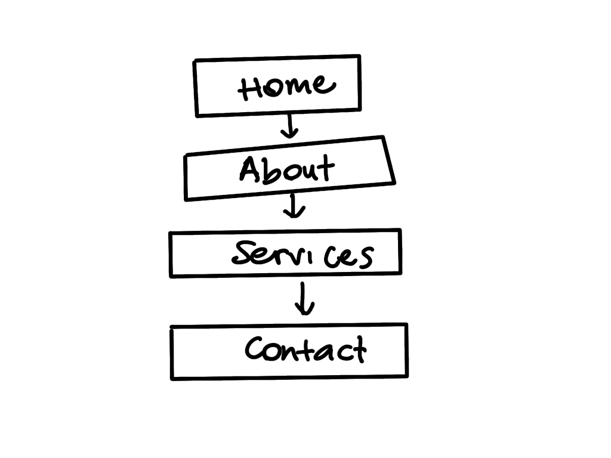
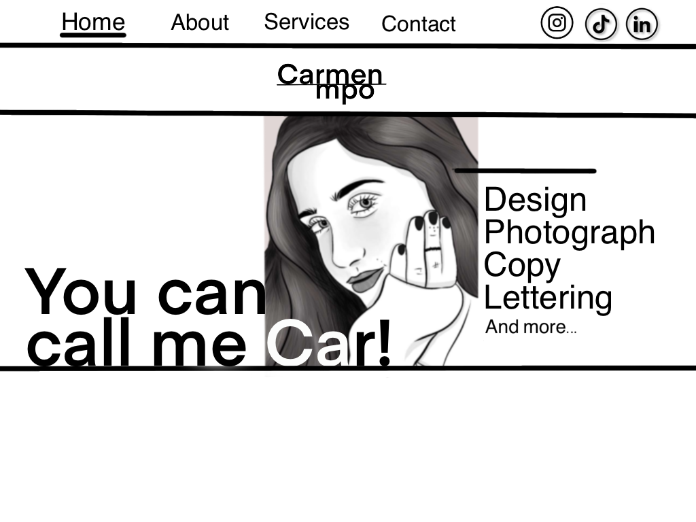
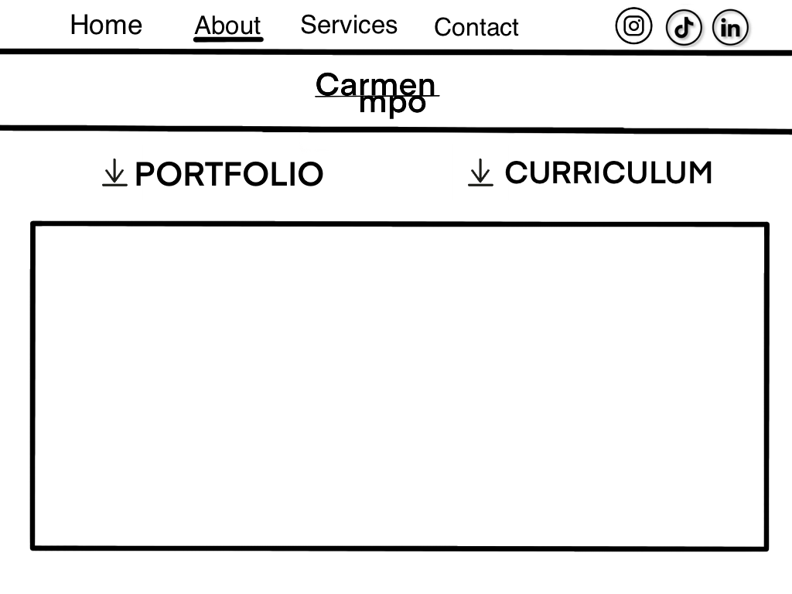
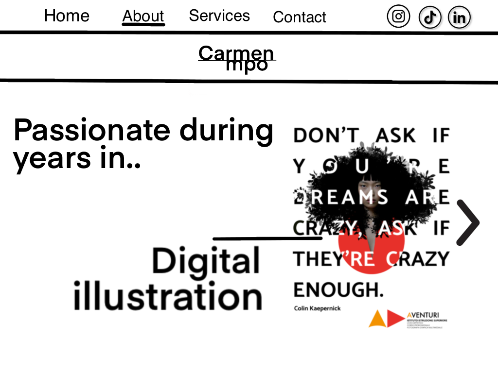
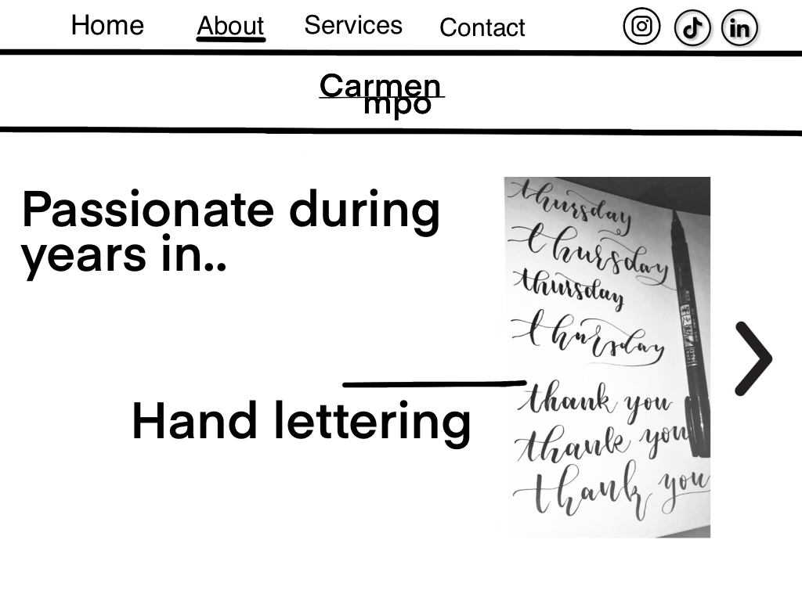
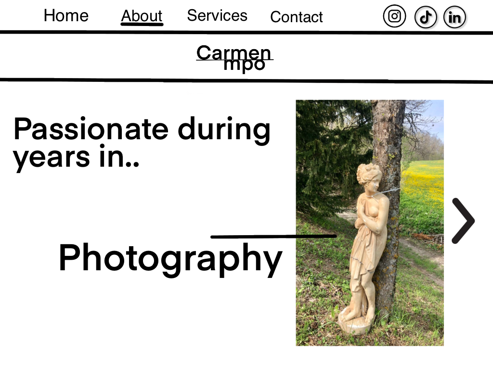
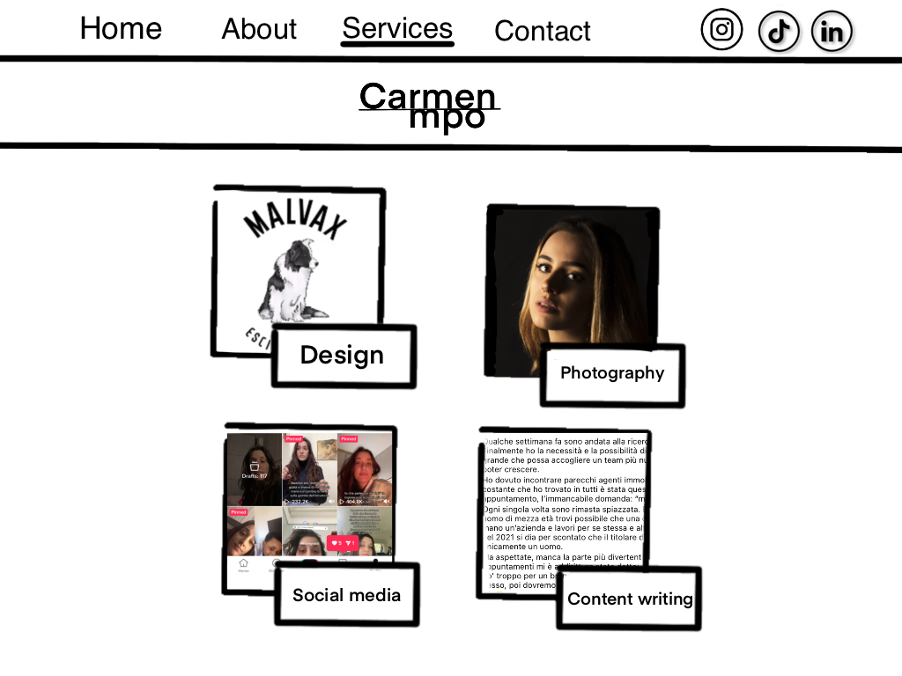
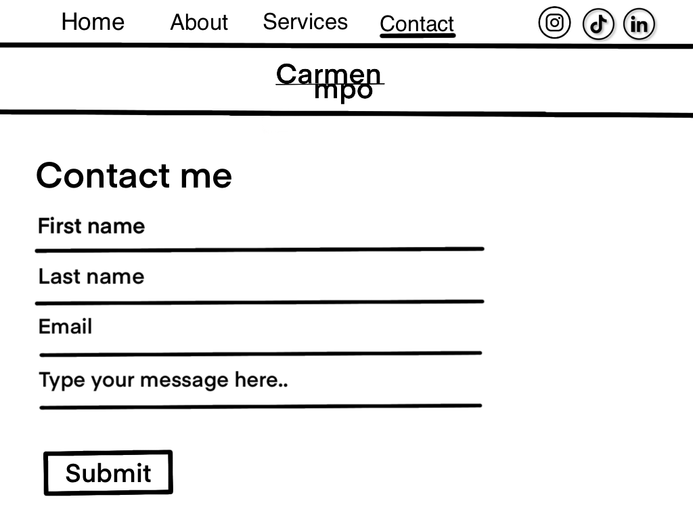

PROJECT MANAGEMENT PLAN
1. Benchmarking
A. Obiettivo:Avere un posto in cui raccogliere i miei progetti e le mie esperienze per farmi conoscere a livello personale e lavorativo dal maggior numero di persone.
B. Target utente: Il target utente è estremamente vasto, spazia da aziende a singoi utenti, di qualsiasi età, sesso o etnia. Con il solo interesse per il Design e la creatività.
C. Competitors:
https://www.danielspatzek.com/home/
https://toyfight.co/what/
https://www.wokine.com/
Ho preso in considerazione tre tipologie diverse di sitoweb "portfolio" per trarre ispirazione ma anche analizzare quali aspetti di questi migliorare per il mio sito. Prima di tutto ho deciso di costruire la mia pagina da zero senza l'utilizzo di template già fatti per distinguermi e rendere il mio sito il più personale possibile e per quanto questi siti competitors siano sofisticati e interattivi erano poco chiari e strutturati in modo complesso, mi sono sentita disorientata, per questa ragione ho deciso di impostare il mio sito in maniera chiara e semplice senza troppi "fronzoli".
2. Struttura e Layout
A. Architettura del sito: Ho optato per una One-page website, per mantenere l'attenzione dell' utente che difficilmnte visiterà tutte le pagine, così da offrire contenuti brevi ma d'impatto.
1. struttura one-page del sito
B. Wireframe:
2. wireframe home
3. wireframe about

4. wireframe home
   5. wireframe services
6. wireframe contact
C.Look and Feel: Ho deciso di utilizzare un font semplice e lineare (Manrope) che riprendesse quelli utilizzati per il portfolio e il curriculum, in modo da avere tutto coordinato.Anche i colori sono semplici ma d'impatto: bianco e nero. poichè volevo rispecchiassero il mio carattere forte e deciso. In generale la struttura risulta semplice ma efficace.
3. Linguaggi e strumenti
A. Linguaggi: HTML e CSS
B. Strumenti:
Procreate: per il disegno o bozza del sito;
Sublime Text2: per la scrittura del codice HTML e CSS;
Bootstrap: per parti di codice HTML e CSS per la grafica ed elementi aggiuntivi;
W3School: per parti di codice HTML e CSS per la grafica ed elementi aggiuntivi;
Google Font: per la scelta del font;
Github: per la pubblicazione del sito sul web.
Social media: per la promozione del sito.
Google Analytics: per il controllo e la valutazione dell’andamento del sito;
COMMUNICATION STRATEGY
1. Background
A differenza degli altri siti competitors, ItsCar è estremamente chiaro, leggibile e intuitivo. Chi cerca informazioni su di me ha la possibilità, attraverso due bottoni, di scaricare direttamente il mio portfolio e il mio curriculum, cosa che non ho ritrovato in altri. Oltre a parlare di progetti riporta inoltre chi sono io veramente, attraverso i miei hobby e le mie passioni, per creare una sorta di legame empatico con l'utente, che potrebbe riconoscersi e ritrovarsi.
2. Obiettivi comunicativi
L’obiettivo di questo sito, pertanto è parlare di me, delle mie competenze per espormi anche a livello lavorativo oltre che personale, poiche vorrei, un giorno, fare della mia passione un lavoro.
3. Target, audience e messaggio
Il sito si rivolge a un numero di utenti il più ampio possibile, per questa ragione è completamente scritto in inglese.
Non si rivolge nello specifico ad un determinato target ma spazia tra ogni utente di età compresa tra i 16 e i 60, di ogni etnia e sesso, con il solo interesse per il design e la creatività in generale.
4. Promozione
Il modo più facile, veloce ed efficace per farmi conoscere e far conoscere il mio sito è certamente l'utilizzo dei social media, facebook, istagram, con particolare attenzione a tik tok poichè il più adatto in termini di viralità e poichè possiedo già un piccolo seguito. Ma anche attraverso i gruppi whatsapp dell' università, in quanto l'argomento può interessare in maniera più immediata.
5. Valutazione dei risultati
I risultati che mi prefisso di raggiungere sono i seguenti:
-Almeno 20 likes al post Istagram. (Post)
-Almeno 50 visite al sito web da utenti unici.
(Report)
-Almeno 100 visualizzazioni al Tik tok.(TikTok)
-L'intera produzione grafica del sito realizzata da me.
Ritengo traguardi importanti anche l'essere stata contattata dopo 48h dalla publicazione del sito per:
1. La realizzazione di un portfolio 2. La scrittura di inviti per un matrimonio.